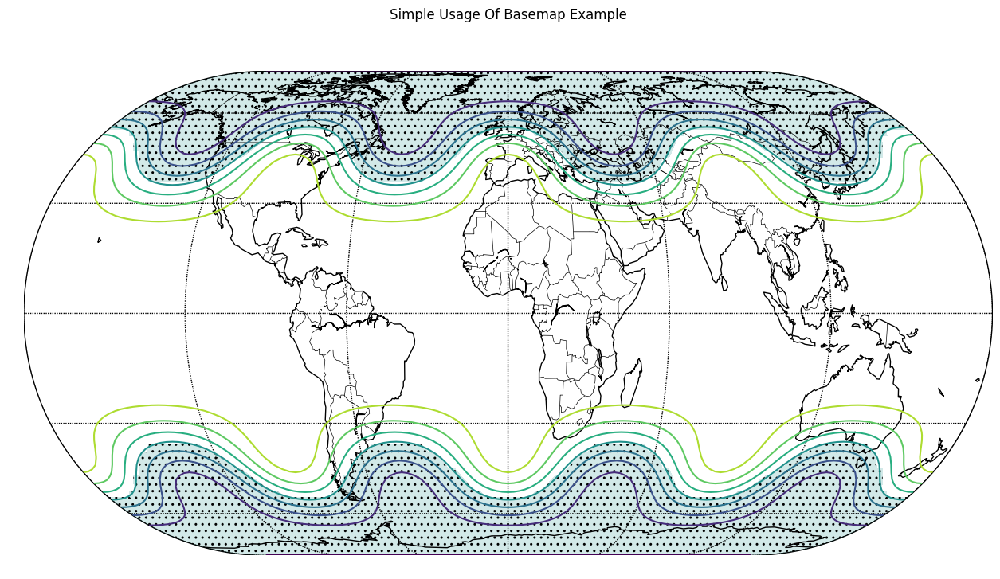

Basemap Plot with Chartly¶
Chartly supports geographic visualisation through basemap plotting
using the add_basemap(...) method. Users can display projected
contour data on a world map while keeping the plotting interface
simple and consistent with the rest of the package.
Example¶
The example below generates contour data, projects it onto a basemap, and visualises the result using Chartly’s high-level interface.
The following customization options can be passed through the customs
dictionary when creating a basemap plot:
proj(str): Map projection type (e.g., “eck4”)lon_0(int): Central longitude used during the basemap projection stepdraw_countries(bool): Draw country bordersdraw_parallels(bool): Draw latitude linesdraw_meridians(bool): Draw longitude linesmask(array-like of bool): Boolean mask used to control hatched regions; required whenhatchis enabled andhatch_customs.get("type") == "mask".contour(bool): Enable contour plottinghatch(bool): Enable hatching; whenhatch_customs["type"] == "mask", hatched regions are determined bymask.hatch_customs(dict): Customization options for hatching (for example,{"type": "mask"}).
import chartly
import numpy as np
super_axes_labels = {
"super_title": "Simple Usage Of Basemap Example",
"share_axes": False,
}
plot = chartly.Chart(super_axes_labels)
# Define grid size (latitude x longitude)
nlats, nlons = 73, 145
# Create latitude and longitude grids
delta = 2.0 * np.pi / (nlons - 1)
lats = 0.5 * np.pi - delta * np.indices((nlats, nlons))[0, :, :]
lons = delta * np.indices((nlats, nlons))[1, :, :]
# Generate sample data over the grid
wave = 0.75 * (np.sin(2.0 * lats) ** 8 * np.cos(4.0 * lons))
mean = 0.5 * np.cos(2.0 * lats) * ((np.sin(2.0 * lats)) ** 2 + 2.0)
# Combine into final dataset for plotting
z = wave + mean
plot.add_basemap(
lon=lons * 180.0 / np.pi,
lat=lats * 180.0 / np.pi,
values=z,
customs={
"proj": "eck4",
"lon_0": 0,
"draw_countries": True,
"draw_parallels": True,
"draw_meridians": True,
"mask": z < 0,
"contour": True,
"hatch": True,
"hatch_customs": {"type": "mask"},
},
)
plot.render()
This example uses the Eckert IV projection and overlays contour data onto a global map. Masking and hatching are applied to highlight specific regions of the dataset, improving the visual distinction of key areas.
{kind=link}
